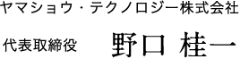

弊社名を初めて目にされた方は、福祉を生業とする企業らしからぬ社名と戸惑われた事と思います。実際、テクノロジーとの名称を冠する会社の多くは、技術に重きを置く企業に多く使われています。その中で私は、福祉にこそ人々の生活を豊かにし、充実した人生を送るための知恵（ナレッジ）＆技術（テクノロジー）が集約されていると考えています。
インターネットが世界の人々との距離を縮めた様に、様々なテクノロジーを活用する事で、障がい者・健常者の垣根を超え、人と人との心の距離を近づけて行く事ができると、私は信じています。
